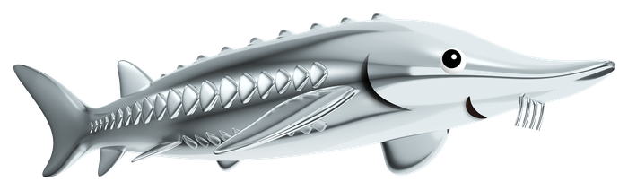

1987
たまご
フジキン ｜ 完全養殖

100
60
0
バルブ開度（流量）
緑の帯に合わせる
1987 — FUJIKIN
フジィを育てよう
「フジキンのバルブを使って、
チョウザメの養殖を始めてみないか？」
最高技術顧問・故 西堀栄三郎先生の一言から、
フジキンの挑戦は始まりました。
水の“ながれ”を制御して、一粒の卵を育ててください。
1992
育ちませんでした。
フジキンが人工ふ化に成功した初年度、
100尾のうち 95尾 が育ちませんでした。
生残率 5%。ここから 6 年かけて、60% まで引き上げます。
水質が尽きると魚は失われます。
流量を緑の帯に保ち、餌の与えすぎに注意してください。

1987 — 2026
このフジィは、実在します。
茨城県常陸太田市・里美養魚場。
いまも 1 万尾を超えるチョウザメが泳いでいます。
バルブメーカーが、日本の国産キャビアを生みました。